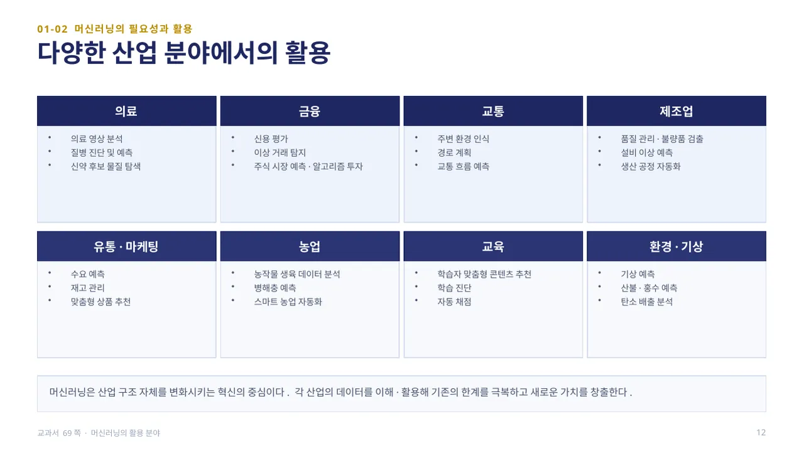
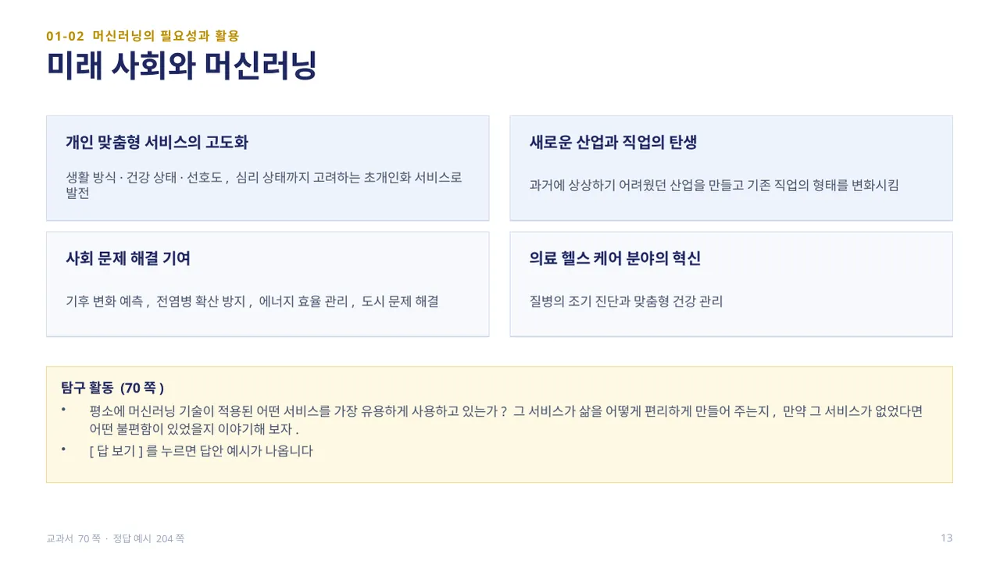
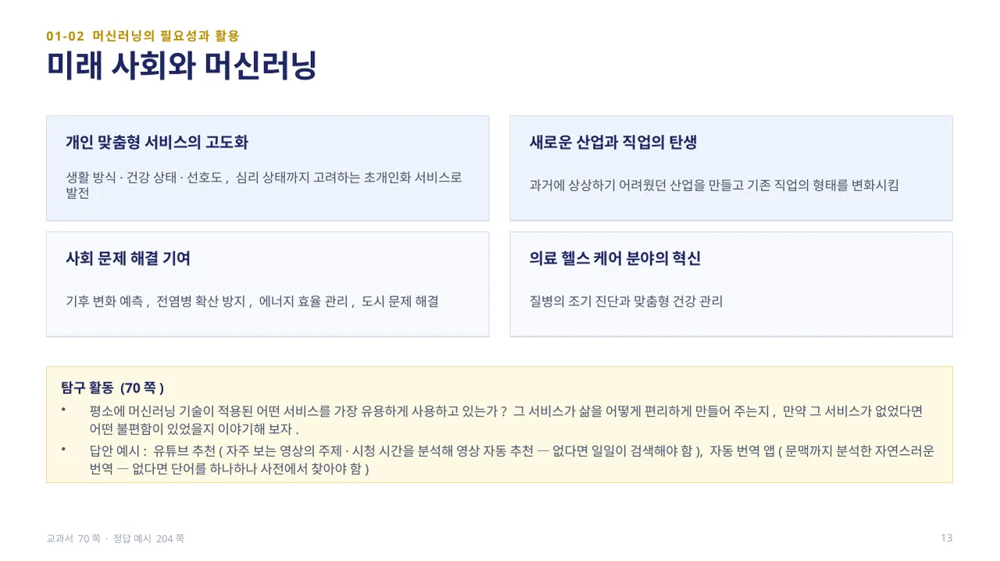

스마트폰 사용 기록, 온라인 쇼핑 내역, SNS 활동, 각종 센서 정보까지 — 방대한 양으로 축적되는 데이터를 빅데이터(Big Data)라고 합니다. 과거의 의사 결정은 주로 경험이나 직관, 제한된 데이터에 의존했지만(예: 설문 조사나 판매원의 경험으로 수요 예측), 데이터 기반 의사 결정은 데이터 속 의미 있는 패턴과 경향을 찾아 더 합리적이고 정확한 결정을 내립니다.
인간의 능력만으로 방대한 데이터를 모두 분석하고 패턴을 찾는 데는 한계가 있습니다. 머신러닝은 인간이 발견하지 못하는 패턴을 찾아내고, 미래를 예측하거나 최적의 선택을 제안함으로써 데이터의 가치를 극대화하는 핵심 도구입니다. 정부·공공 기관도 범죄 예방, 재난 예측, 교통 체증 완화 등에 데이터를 활용합니다. (교과서 68~69쪽)

머신러닝은 의료(의료 영상 분석·질병 진단·신약 후보 물질 탐색), 금융(신용 평가·이상 거래 탐지·주식 시장 예측), 교통(주변 환경 인식·경로 계획·교통 흐름 예측), 제조업(품질 관리·불량품 검출·설비 이상 예측) 등 거의 모든 산업 분야에서 활용되고 있습니다.
유통·마케팅(수요 예측·재고 관리·맞춤형 상품 추천), 농업(생육 데이터 분석·병해충 예측), 교육(맞춤형 콘텐츠 추천·자동 채점), 환경·기상(기상 예측·산불·홍수 예측) 분야에서도 폭넓게 쓰입니다. 머신러닝은 산업 구조 자체를 변화시키는 혁신의 중심으로, 각 산업의 데이터를 이해·활용해 기존의 한계를 극복하고 새로운 가치를 창출합니다. (교과서 69쪽)

앞으로는 생활 방식·건강 상태·선호도·심리 상태까지 고려하는 초개인화 서비스로 발전하고, 과거에 상상하기 어려웠던 새로운 산업과 직업이 생겨날 것입니다. 기후 변화 예측, 전염병 확산 방지, 에너지 효율 관리 같은 사회 문제 해결에도 기여하며, 의료 헬스 케어 분야에서는 질병의 조기 진단과 맞춤형 건강 관리로 이어집니다.
탐구 활동(70쪽): 평소 가장 유용하게 사용하는 머신러닝 서비스와, 그 서비스가 없다면 어떤 불편함이 있을지 생각해 봅니다.
답 보기답 숨기기

답안 예시 — 유튜브 추천(자주 보는 영상의 주제·시청 시간을 분석해 자동 추천, 없다면 일일이 검색해야 함), 자동 번역 앱(문맥까지 분석한 자연스러운 번역, 없다면 단어를 하나하나 사전에서 찾아야 함). (정답 예시 204쪽)
 인공지능 파이썬 실무
인공지능 파이썬 실무